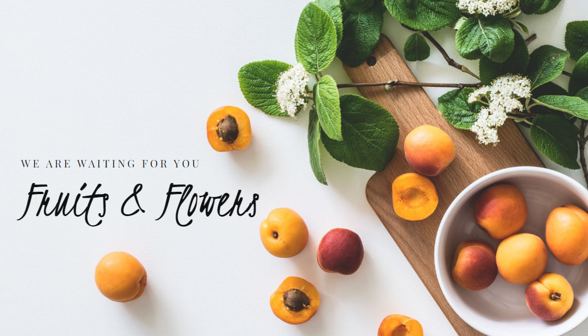

IBM NALAIYATHIRAN
Food is essential for human life and has been the concern of many healthcare conventions. Nowadays new dietary assessment and nutrition analysis tools enable more opportunities to help people understand their daily eating habits, exploring nutrition patterns and maintain a healthy diet. Nutritional analysis is the process of determining the nutritional content of food. It is a vital part of analytical chemistry that provides information about the chemical composition, processing, quality control and contamination of food. The main aim of the project is to building a model which is used for classifying the fruit depends on the different characteristics like colour, shape, texture etc. Here the user can capture the images of different fruits and then the image will be sent the trained model. The model analyses the image and detect the nutrition based on the fruits like (Sugar, Fibre, Protein, Calories, etc.).

HEALTHY FOOD, HEALTHY LIFE
WELCOME Move to the page center for uploading your image file.
UPLOAD